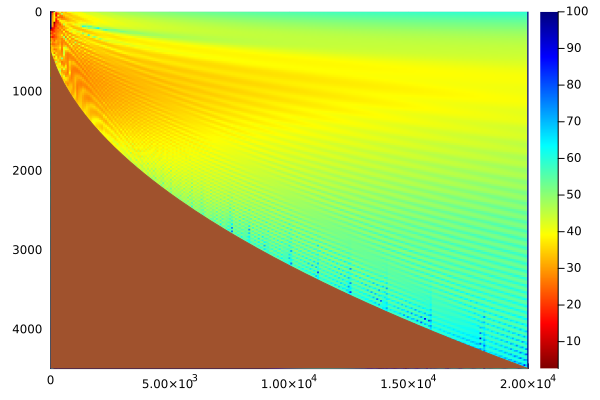
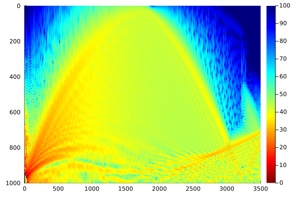
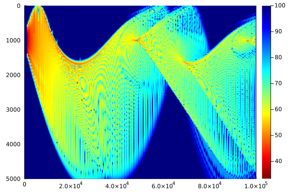
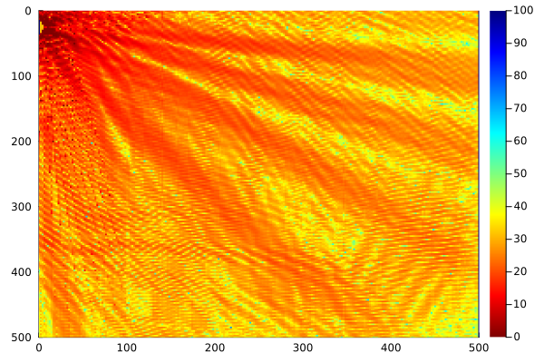

Acoustic Tracing Interpolation to Grid
using OceanSonar
using Plots
using .Threads
@time "all" begin
begin
models = list_models(Scenario)
for m in eachindex(models)
model = models[m]
scen = Scenario(model)
prop = @time "$model" Propagation(:trace, scen,
angles = critical_angles(scen)
)
fig = visual(prop)
savefig(fig, "prop_" * modelsnake(scen.model) * ".svg")
end
end
endNorwegian Sea Surface Duct: 16.050447 seconds (339.53 M allocations: 8.095 GiB, 9.85% gc time, 3.51% compilation time)
Index Squared Profile: 6.584072 seconds (146.30 M allocations: 4.160 GiB, 6.58% gc time, 1.21% compilation time)
Parabolic Bathymetry: 5.648650 seconds (127.67 M allocations: 3.512 GiB, 6.28% gc time, 4.31% compilation time)
Lloyd Mirror: 5.265371 seconds (124.04 M allocations: 3.488 GiB, 6.78% gc time, 0.00% compilation time)
Norwegian Sea Sound Channel: 11.135374 seconds (258.57 M allocations: 6.084 GiB, 8.40% gc time)
Linearised Convergence Zones: 9.411842 seconds (214.18 M allocations: 5.240 GiB, 6.71% gc time, 2.19% compilation time)
Munk Profile: 9.537057 seconds (199.23 M allocations: 4.913 GiB, 9.92% gc time)
all: 67.216353 seconds (1.42 G allocations: 35.880 GiB, 7.89% gc time, 5.27% compilation time: 7% of which was recompilation)


